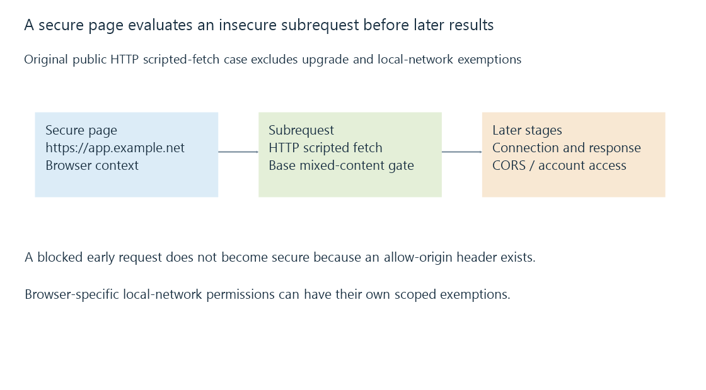

Mixed content and a browser’s secure-page boundary
Mixed-content processing governs insecure subrequests made by a secure browser page, with request type, upgrade policy and local-network features separate from CORS and server reachability.
An HTTPS web page can load correctly while a later request to a plaintext HTTP media server is refused by the browser.
The page and subrequest have different security contexts. The browser evaluates that relationship before ordinary application code can use the result.
A secure page can choose an insecure subresource
Use this original reduced case:
{
"page": "https://app.example.net/",
"request": "http://media.example.net/api/status",
"kind": "scripted-fetch",
"upgradePolicy": false,
"localNetworkExemption": false
}
The request is an active scripted fetch to an ordinary HTTP endpoint. Under the stated base mixed-content processing, it is blocked rather than becoming a successful readable response.
This is a policy exercise, not a browser capture. The example names are reserved, and the data explicitly excludes additional exemptions.

Resource types and upgrade policies matter
The Mixed Content specification distinguishes processing that can upgrade certain requests from processing that blocks insecure requests.
| Request context | Relevant behavior to examine |
|---|---|
| Script/API fetch from a secure page | Blocking or an applicable explicit policy/exception |
| Eligible image/audio/video request | Automatic upgrade rules and actual secure endpoint |
| Request to an IP-literal host | Its separate eligibility/exemption context |
| Navigation to another page | Navigation policy, distinct from fetching a subresource |
The table identifies different contexts rather than promising one outcome in every browser release.
A content-security policy can also request upgrades. It changes the selected URL scheme; it does not make an HTTP listener understand TLS.
An upgrade preserves some endpoint choices
Suppose an eligible original poster URL is:
http://media.example.net:8096/poster.jpg
An upgrade to https retains the explicit port 8096. It does not automatically select Emby’s other HTTPS listener at 8920.
The secure version can therefore fail even though the HTTP poster worked separately. The endpoint has to provide the requested protected service.
Local-network access has another browser policy
Local/private destinations can trigger additional browser rules or permissions. Chrome’s published Local Network Access material describes a permission introduced in Chrome 142 and specific local-request behavior.
That feature can interact with mixed-content handling; it should not be treated as a universal rule shared by every TV app and browser.
Loopback and potentially trustworthy local contexts also have defined exceptions. A result for localhost should not be generalized to every plaintext private server address.
Retain the actual browser/version, page origin, subrequest URL and relevant permission/policy when identifying this stage.
CORS controls another decision
CORS governs whether the browser can expose an applicable cross-origin response to the requesting script. It does not cause an earlier blocked mixed-content request to become an ordinary secure resource.
A server adding an allow-origin header cannot create TLS on its HTTP listener. Similarly, a working TLS endpoint can still reject or fail a CORS request.
Same-origin and CORS follows that readable-response boundary.
Hosted and server-hosted web apps can have different origins
A hosted Emby web page and a web app served directly by the chosen server start from different page origins. They can consequently exercise different subrequest relationships even when the viewer selects the same media.
Emby’s connectivity documentation identifies secure hosted-web access as a context to examine. The relevant evidence is the browser’s actual blocked/selected request and its security reason, not only the server’s ability to answer another standalone HTTP connection.
See Also
- HTTPS and TLS: transport protection and peer identity
- Same-origin policy, CORS and readable responses
- Reverse proxies and the two-sided server path
- Browser media playback and its loading paths